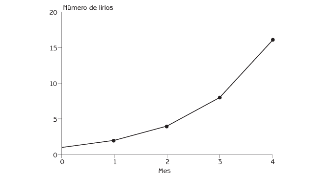
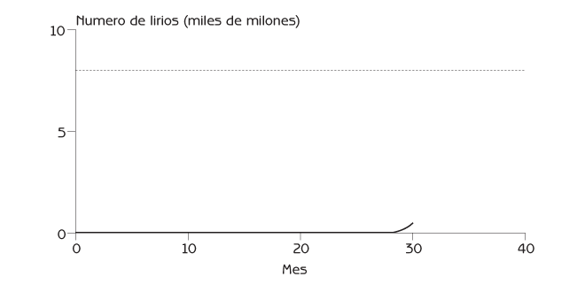
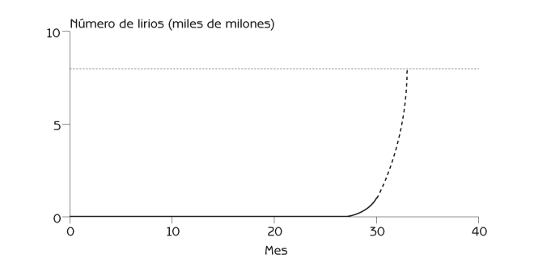
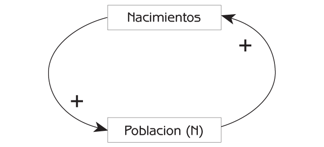
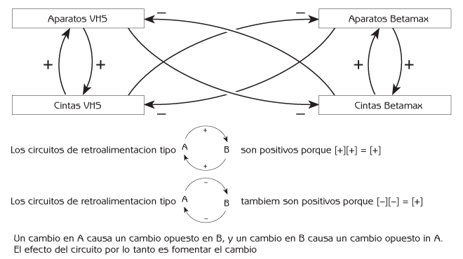
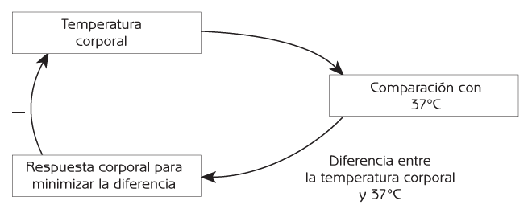
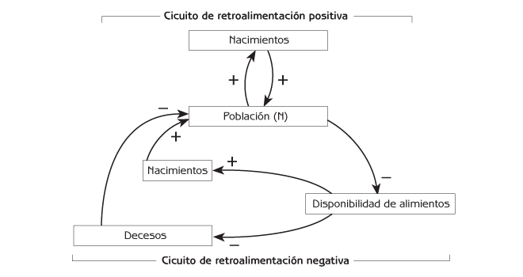
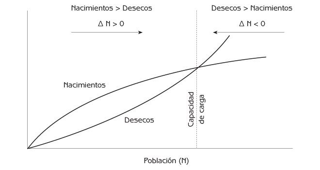
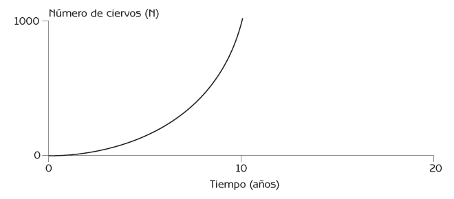
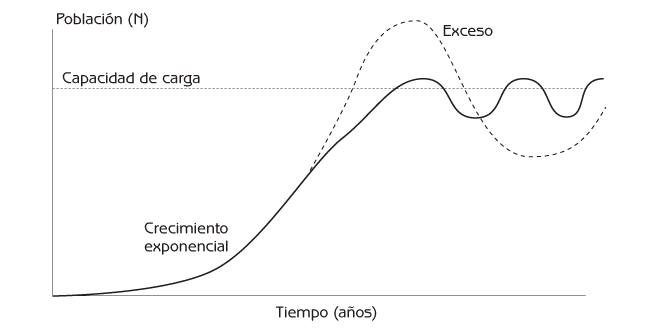

Ecología Humana
Conceptos Básicos para el Desarrollo Sustentable
Autor: Gerald G. Marten
Editorial: Earthscan Publications
Fecha de publicación: November 2001, 256 pp.
Edición en rústica: 1853837148
Edición en pasta dura: 185383713X
Capítulo 2 Poblaciones y Sistemas de Retroalimentación
- Crecimiento Demográfico Exponencial
- Retroalimentación Positiva
- Retroalimentación Negativa
- Regulación de las Poblaciones
- El Significado Práctico de la Retroalimentación Positiva y Negativa
- Puntos de Reflexión
¿Por qué a veces los problemas ambientales aparecen tan de repente? La explicación se debe a las retroalimentaciones positivas y negativas – fuerzas poderosas que moldean el comportamiento de todos los sistemas biológicos, desde las células a los sistemas sociales y los ecosistemas. La retroalimentación es el efecto que tiene un cambio en una parte de un ecosistema o un sistema social sobre esa misma parte después de pasar por una cadena de efectos en otras partes del sistema. La retroalimentación negativa genera estabilidad. Todos los ecosistemas y los sistemas sociales tienen centenares de circuitos de retroalimentación que mantienen a todas las partes del sistema dentro de los límites necesarios para que el sistema en conjunto continúe funcionando adecuadamente. La retroalimentación positiva genera cambios. La retroalimentación positiva es la responsable de la aparición súbita de problemas ambientales y de muchos otros cambios rápidos en el mundo que nos rodea.
La comunidad biológica de un ecosistema consiste en las poblaciones de todas las especies de plantas, animales y microorganismos que lo habitan. Las personas interactúan de manera directa o indirecta con estas poblaciones siempre que interactúan con un ecosistema. Este capítulo explica cómo la retroalimentación positiva hace que las poblaciones crezcan rápidamente cuando hay un exceso de recursos. También explica cómo la retroalimentación negativa restringe el tamaño de las poblaciones de todas las especies de una comunidad biológica dentro de los límites que el ecosistema puede sostener.
Crecimiento Demográfico Exponencial
Una sencilla historia acerca del crecimiento demográfico exponencial puede mostrar porqué los problemas ambientales aparecen a veces tan súbitamente. El lirio acuático es una planta flotante que se ha extendido desde Sudamérica a cuerpos de agua alrededor del mundo. Su cobertura de la superficie del agua puede ser tan tupida que llega a obstruir el movimiento de embarcaciones.
Imagine un lago de 10 kilómetros de diámetro. Se requieren ocho mil millones de plantas de lirio para cubrir completamente un lago de este tamaño. Al principio, nuestro lago no tiene un solo lirio. Entonces, introducimos una planta de lirio al lago. Después de un mes, esta planta ha formado dos individuos. Después de otro mes, las dos plantas se han transformado en cuatro (ver Figura 2.1), y la duplicación continúa mes tras mes. Dos años después, los lirios se han multiplicado para formar 17 millones de plantas. Nadie les pone demasiada atención porque 17 millones de plantas únicamente cubren 0.2 por ciento de la superficie del lago.

Figura 2.1 Crecimiento de la población de jacinto acuático durante los primeros 4 meses después de la introducción de un solo lirio a un lago.
Al cabo de seis meses más, treinta meses después de que introdujimos la primera planta al lago, hay mil millones de lirios, que cubren alrededor de 13 por ciento del lago (ver Figura 2.2). Ahora la gente empieza a darse cuenta de la presencia de los lirios. Aunque no hay suficiente para significar un problema para el movimiento de las embarcaciones, algunas personas empiezan a preocuparse. Otras dicen, ‘No hay porque preocuparse. Pasó mucho tiempo antes de que llegara a haber tantos lirios. Y pasará mucho más antes de que haya suficientes como para que signifiquen un problema’. ¿Quién tiene la razón? ¿Se encuentra el problema muy alejado en el futuro, o va a surgir muy pronto? De hecho, con los lirios duplicándose cada mes, el lago se encontrará completamente cubierto después de únicamente tres meses más (ver Figura 2.3).

Figura 2.2 Población de jacinto después de 30 meses.
Esta es una historia verdadera. El lirio acuático se ha convertido en un fastidio incontrolable en muchos lugares, incluyendo el segundo lago más grande del mundo – el Lago Victoria en África Oriental – donde los peces son una importante fuente de proteínas para millones de personas. Actualmente hay partes del Lago Victoria que están tan tupidas de lirios que las embarcaciones pesqueras no se pueden mover por el agua. Millares de pescadores se han quedado sin trabajo, y el suministro de pescado se ha reducido muy significativamente.

Figura 2.3 Crecimiento exponencial de la población de jacinto acuático.
La historia del lirio acuático trata de plantas que flotan en un lago, pero también aplica a la población humana en el planeta Tierra. La rápida ocupación del lago por los lirios después de que su población se volvió conspicua es comparable al crecimiento demográfico exponencial que hoy está llenando de humanos al planeta. La capacidad de carga que tiene la Tierra para la especie humana puede llegar a unos ocho mil millones de individuos; y la población humana en el planeta ya es de seis mil millones. Nadie sabe exactamente a cuántas personas puede soportar la Tierra de manera sustentable. Su capacidad de carga para los seres humanos depende de la tecnología, incluyendo la del futuro. También depende de los impactos que las actividades humanas ejercen sobre los ecosistemas, actividades que por primera vez se están llevando a cabo de manera intensiva a escala global. No obstante, la historia de los lirios implica lo mismo para la población humana, independientemente de que la capacidad de carga de la Tierra sea de seis mil millones, ocho mil millones, diez mil millones, o incluso algo más.
Retroalimentación Positiva
La historia de los lirios acuáticos es un ejemplo de retroalimentación positiva – una cadena circular de efectos que incrementa el cambio. Muchos cambios en los ecosistemas parecen ser muy rápidos debido a la retroalimentación positiva. Cuando crece una parte de un ecosistema, otra parte cambia de manera que la primera crezca aún más. Hay una retroalimentación positiva siempre que A tiene un efecto positivo sobre B, y B tiene un efecto positivo sobre A (ver Figura 2.4). La retroalimentación positiva es una fuente de inestabilidad, es una fuerza para el cambio.

Figura 2.4 Circuito de retroalimentación positiva.
El crecimiento exponencial es un ejemplo de retroalimentación positiva (ver Figura 2.5). El crecimiento demográfico exponencial ocurre cuando hay un exceso de alimento, espacio y otros recursos que permite que una población de plantas o animales crezca sin límite. Una mayor población conduce a más nacimientos, y más nacimientos llevan a una población creciente. La historia del lirio acuático no trata únicamente de las plantas que flotan en un lago. Ilustra cómo el crecimiento demográfico de las poblaciones humanas en años recientes, y el crecimiento exponencial en el uso de los recursos naturales y la contaminación debida a la industrialización, puede alcanzar súbitamente los límites de los ecosistemas para proporcionar recursos y absorber la contaminación.
La retroalimentación positiva incrementa el cambio, pero no siempre genera crecimiento. Si un cambio es descendente, la retroalimentación positiva puede hacer que ese descenso se haga aún mayor. Esto puede suceder con las poblaciones. Cuando el número de animales de una población de una especie amenazada se hace tan pequeño que les resulta difícil encontrar parejas, los nacimientos son menos y la población decrece. La disminución de la población hace más difícil que encuentren pareja, y la población disminuye aún más. La retroalimentación positiva genera un decremento poblacional que conduce a la extinción.

Figura 2.5 El circuito de retroalimentación positiva genera crecimiento exponencial de la población.
La retroalimentación positiva no sólo acontece entre las poblaciones de plantas y animales. También es común en los sistemas sociales humanos. La estimulación mutua de las relaciones amigables o antagónicas entre individuos o grupos es un ejemplo de retroalimentación positiva. La retroalimentación positiva indeseable se llama ‘círculo vicioso’. La carrera armamentista de la Guerra Fría entre los Estados Unidos y lo que fuera la Unión de Repúblicas Socialistas Soviéticas nos proporciona un ejemplo de retroalimentación positiva. Cuando los Estados Unidos desarrollaron más y mejores armamentos, la Unión Soviética se alarmó por el incremento en el poderío militar Americano, y esto la estimuló a desarrollar más y mejores armas. Los Estados Unidos, alarmados ante el crecimiento del poder militar soviético, desarrollaron aún más armas. La retroalimentación positiva ocasionó una espiral ascendente de armamento en las dos naciones. El proceso se revirtió cuando terminó la guerra Fría, y los Estados Unidos y la Unión Soviética acordaron reducir parcialmente su armamento. Aunque la reducción internacional de armamentos ha sido un proceso muy complejo, una parte muy importante de la historia ha consistido en la estimulación recíproca entre los Estados Unidos y la Unión Soviética para reducir progresivamente la cantidad de armas que han dirigido una nación contra la otra. Lo mismo que la espiral ascendente se debió a la retroalimentación positiva, la espiral descendente también ha sido debida a la retroalimentación positiva.
Un ejemplo de retroalimentación positiva que ocasiona que una cosa substituya a otra
La retroalimentación positiva puede ocasionar que una cosa aumente y otra disminuya. Cuando hay competencia entre dos partes de un ecosistema, la retroalimentación positiva hace que una parte sustituya a la otra. La victoria de las cintas de video en formato VHS sobre las Betamax es un buen ejemplo. Hace veinticinco años, cuando las grabadoras de video aparecieron por primera vez en el mercado, había dos sistemas completamente diferentes para las grabadoras de video. Los sistemas eran VHS y Betamax, y eran incompatibles entre sí. En las grabadoras de formato VHS sólo podían utilizarse cintas VHS, y en las de formato Betamax, sólo podían utilizarse cintas Betamax.
El público no sabía qué sistema elegir porque el costo y la calidad de uno y otro eran más o menos equivalentes. En consecuencia, algunas personas adquirieron grabadoras VHS, y otras compraron grabadoras Betamax. Al principio, aproximadamente la mitad de las personas tenía VHS, y la otra mitad Betamax, de manera que más o menos la mitad de las cintas de video en las tiendas era del formato VHS, y las demás eran Betamax. La situación continuó así durante varios años. Después, el número de grabadoras y cintas del formato VHS empezó a crecer exponencialmente, y el número de las Betamax disminuyó de una manera igualmente veloz. El formato Betamax desapareció, y ahora todo mundo utiliza el VHS.
¿Por qué ganó la competencia el formato VHS? La Figura 2.6 muestra lo sucedido. El gran cambio comenzó cuando poco más de la mitad de las personas tenía VCR de formato VHS. En ese momento, las compañías cinematográficas comenzaron a hacer más películas en cintas de video con el sistema VHS porque más personas tenían grabadoras VHS y por tanto adquirían cintas VHS. Entonces, más personas seleccionaban el formato VHS al comprar nuevas grabadoras, porque había más películas disponibles en formato VHS. En consecuencia, había cada vez más grabadoras VHS, y menos del formato Betamax, de manera que las compañías cinematográficas sacaron aún más películas en el formato VHS y menos en cintas Betamax. En otras palabras, un incremento en el formato VHS desencadenó una serie de efectos a través del sistema que ocasionó que el formato Betamax disminuyera aún más. Estos fueron circuitos de retroalimentación positiva que llevaron al formato VHS a la victoria y ocasionaron que el Betamax desapareciera.

Figura 2.6 Circuitos de retroalimentación positiva que resultaron en la sustitución de cintas Betamax por VHS.
Los mismos tipos de circuitos de retroalimentación están presentes en los ejemplos de sucesión ecológica descritos en el capítulo 6. Véase en particular el ejemplo de degradación de pastizales debido a sobrepastoreo.
Retroalimentación Negativa
La retroalimentación negativa es una cadena circular de efectos que se opone al cambio. Mantiene las cosas en el mismo estado. Cuando una parte de un sistema cambia demasiado con respecto a lo que debiera ser, otras partes del sistema cambian de manera que dan marcha atrás al cambio que aconteció en un principio. La función de la retroalimentación negativa consiste en mantener las partes del sistema dentro de los límites necesarios para la supervivencia. La retroalimentación negativa es una fuente de estabilidad; es una fuerza contra el cambio.
La homeostasis es un ejemplo de retroalimentación negativa en los sistemas biológicos. La homeostasis es el control de las condiciones físicas y químicas internas de un organismo para que permanezcan dentro de los límites requeridos para su supervivencia. La Figura 2.7 muestra cómo se utiliza la retroalimentación negativa para controlar la temperatura del cuerpo humano.
Si la temperatura corporal se incrementa a más de 37o Celsius, la retroalimentación negativa reduce la temperatura corporal a través de:
- una reducción en la generación metabólica de calor; y
- un incremento en la pérdida de calor del cuerpo (aumentando el aporte de sangre a la piel y el sudor).
Si la temperatura corporal disminuye por debajo de 37o Celsius, la retroalimentación negativa incrementa la temperatura corporal a través de:
· Un incremento en la generación de calor (tiritando); y
· Una reducción en la pérdida de calor (disminuyendo el flujo de sangre hacia la piel y el sudor).
Mantener la temperatura alrededor de 37o Celsius es esencial para la supervivencia de una persona.

Figura 2.7 Control de la temperatura corporal por retroalimentación negativa.
La retroalimentación negativa es común en los sistemas sociales. Por ejemplo, las personas utilizan la retroalimentación negativa al conducir un automóvil. Si el auto empieza a salir del camino, se gira el volante en sentido opuesto para regresar al camino. En otras palabras, cuando la trayectoria empieza a cambiar, la retroalimentación negativa del conductor revierte el cambio devolviendo el auto a su curso. Los ingenieros utilizan la retroalimentación negativa en las máquinas. Si un aeroplano empieza a descender a tierra cuando no debiera hacerlo, el ‘piloto automático’ de la nave hace que se eleve para mantenerlo en la altitud correcta.
Regulación de las Poblaciones
Imagínese un bosque sin ciervos. Eventualmente, un ciervo macho y una hembra llegan a ese bosque. Después de un año producen dos cervatillos. Un año más tarde, estos nuevos ciervos jóvenes tienen la edad suficiente para reproducirse, y cada pareja produce dos cervatillos más. La población de ciervos continúa duplicándose cada año, y después de diez años ya hay 1,000 ciervos. Los ciervos necesitan una gran cantidad de alimento para crecer y producir crías. Sin embargo, ya no hay tanto alimento como antes, ya que un mayor número de ciervos consume demasiado. Los ciervos son menos saludables, más susceptibles a las enfermedades, y a veces mueren jóvenes por falta de alimento. Además, una cierva malnutrida puede producir un solo cervatillo, en lugar de dos.
Esta historia nos dice que los ciervos se ven limitados por la disponibilidad de alimento:
- Cuando la población crece, el alimento disponible disminuye.
- Cuando la población disminuye, el alimento disponible aumenta.
- Cuando crece la cantidad de alimento disponible, aumentan los nacimientos y las muertes disminuyen.
- Cuando decrece la cantidad de alimento disponible, disminuyen los nacimientos y aumentan las muertes.
- Así, cuando aumenta la población, disminuye la disponibilidad de alimento, la tasa de nacimiento (nacimientos/población) disminuye, y la tasa de mortalidad (muertes/población) incrementa.
- Cuando disminuye la población, aumenta la disponibilidad de alimento, se incrementa la tasa de nacimientos, y la de mortalidad decrece.
Regulación de las poblaciones y capacidad de carga
La historia de los ciervos es también la de todas las plantas y los animales, incluyendo al ser humano. ¿Por qué tienen las plantas y los animales los índices de abundancia que tienen?, ¿por qué no hay más?, ¿o menos? La explicación se encuentra en la regulación de las poblaciones. La regulación de las poblaciones hace uso de la retroalimentación negativa para mantener a las poblaciones de plantas y animales dentro de los límites de capacidad de carga de su medio ambiente. La capacidad de carga es el tamaño de la población que el alimento disponible en el medio ambiente puede soportar a largo plazo (es decir, que resulte sustentable). En vista de que los recursos que sostienen a las poblaciones son limitados, ninguna población puede exceder durante mucho tiempo la capacidad de carga de su medio ambiente.
La Figura 2.8 muestra cómo una población se ve afectada por la retroalimentación positiva y la negativa. Con el circuito de la retroalimentación positiva, un incremento en el tamaño de la población conduce a una mayor cantidad de nacimientos, lo que hace que la población aumente aún más. Con el circuito de la retroalimentación negativa, un aumento en el tamaño de la población reduce la disponibilidad de alimento. Una menor cantidad de alimento significa más muertes y menos nacimientos.

Figura 2.8 Regulación de la población por el abasto de alimento. Nota: el circuito de retroalimentación negativa a través de alimentos y nacimientos es (-)(+)(+) = (-). El circuito de retroalimentación negativa de alimentos y muertes es (-)(-)(-) = (-)
La Figura 2.9 ilustra la forma en que la retroalimentación negativa regula una población que se encuentra cerca de su capacidad de carga. Si el número de plantas o animales de una población se encuentra por debajo de su capacidad de carga, hay más nacimientos que muertes, y la población aumenta de tamaño hasta que alcanza la capacidad de carga. Si el tamaño de una población es superior a su capacidad de carga, hay más muertes que nacimientos, y el tamaño de la población disminuye hasta que alcanza la capacidad de carga. Una vez que el tamaño de una población se encuentra cerca de su capacidad de carga, el número de nacimientos es más o menos igual al de decesos, y la población no cambia demasiado de tamaño.

Figura 2.9 Relación entre cambios poblacionales y capacidad de carga. Nota: N = población ; ∆N = cambio en la población; ∆N = (total de nacimientos en una población) – (total de muertes en una población). Cuando los nacimientos > las muertes, ∆N>0 y la población aumenta. Cuando las muertes > los nacimientos, ∆N<0 y la población disminuye.
Volviendo a la historia de los ciervos, en la Figura 2.10 se puede ver lo que sucedió con la población de ciervos durante los primeros diez años. DN/Dt (el cambio del tamaño de la población de ciervos durante cada año) es pequeño durante los primeros años, cuando la población de ciervos es igualmente pequeña. DN/Dt es mayor durante el noveno año, cuando la población de ciervos ha crecido considerablemente. La curva del crecimiento demográfico es exponencial debido a la retroalimentación positiva, pero el crecimiento exponencial no puede continuar indefinidamente. ¿Qué va a suceder durante los próximos 20 años?

Figura 2.10 Crecimiento de la población de ciervos a partir de una pareja.
Lo que ocurre usualmente cuando una población de ciervos o de cualquier otra especie de planta o animal empieza a poblar un nuevo lugar es una curva ‘sigmoide’ con forma de S (como la que se muestra en la Figura 2.11). El crecimiento exponencial de la primera parte de la curva sigmoide es seguida por la regulación de la población a medida que el número de plantas o animales se aproxima a la capacidad de carga y la retroalimentación negativa asume el control. En muchos casos, una población aumenta gradualmente y después fluctúa alrededor de la capacidad de carga (la curva continua de la Figura 2.11). No permanece precisamente en la capacidad de carga porque:
· la retroalimentación negativa no es muy precisa; y
· otros factores además de la disponibilidad de alimento pueden tener algún impacto sobre los nacimientos y muertes.
A veces, una población crece tan rápidamente que excede su capacidad de carga antes de que la retroalimentación negativa pueda detener el incremento (la curva punteada de la Figura 2.11). Si el crecimiento de la población se excede, generalmente abate la cantidad de su alimento de una manera tan severa que la retroalimentación negativa rápidamente reduce la población a niveles inferiores a su capacidad de carga con un mayor número de muertes y una reducción en el número de nacimientos.

Figura 2.11 Curva sigmoide para el crecimiento poblacional y su regulación.
El Significado Práctico de la Retroalimentación Positiva y Negativa
Todos los ecosistemas y los sistemas sociales humanos tienen numerosos circuitos de retroalimentación positiva y negativa. Los dos tipos de retroalimentación resultan esenciales para la supervivencia. La retroalimentación negativa aporta estabilidad; mantiene partes importantes del sistema dentro de los límites requeridos para su funcionamiento apropiado. La retroalimentación positiva proporciona la capacidad para cambiar radicalmente cuando se requiere. El desarrollo y crecimiento de los sistemas de todos los sistemas biológicos – desde las células y los organismos individuales y los ecosistemas y los sistemas sociales – se basa en el juego entre las retroalimentaciones positivas y negativas. Los ecosistemas y los sistemas sociales pueden permanecer aproximadamente sin variación durante largos períodos, pero a veces cambian muy rápidamente y de forma dramática. Funcionan mejor cuando presentan un balance apropiado entre las fuerzas que promueven el cambio y las que promueven la estabilidad.
Las personas interactúan constantemente con estas fuerzas del cambio y la estabilidad. Las personas dependen de la retroalimentación negativa ‘para hacerse cargo de las cosas’ y mantener todo funcionando de manera fluida la mayor parte del tiempo. Cuando las personas tratan de mejorar su situación (‘desarrollo’ o ‘resolución de problemas’), utilizan la retroalimentación positiva para provocar los cambios que desean. Sin embargo, además de trabajar para las personas, la retroalimentación positiva o negativa también puede trabajar en su contra. A veces las personas tratan de mejorar las cosas o resolver un problema, pero sin importar lo que hagan, no hay mejoras porque están trabajando en contra de la retroalimentación negativa que evita que se lleven a cabo los cambios que desean. Otras veces, las personas preferirían que las cosas se quedaran como están, pero la retroalimentación positiva amplifica las acciones aparentemente inocuas, y las transforma en cambios no deseados. Si prestamos atención a las retroalimentaciones positivas y negativas en nuestros sistemas sociales y en los ecosistemas, podemos utilizarlas en nuestro beneficio en lugar de luchar contra ellas. En el caso de los ecosistemas, esto significa ajustar nuestras actividades a los ecosistemas para hacer las cosas ‘a la manera de la naturaleza’, de modo que la naturaleza haga la mayor parte del trabajo y mantenga las cosas funcionando. El significado concreto de ‘hacer las cosas a la manera de la naturaleza’ se hará más claro en los siguientes capítulos.
Puntos de Reflexión
- Piense en ejemplos de retroalimentación positiva a diferentes niveles de organización social en su sistema social: la familia y los amigos, el vecindario, la ciudad, el nivel nacional, y el internacional. Haga diagramas que muestren las cadenas circulares de efectos (es decir, circuitos de retroalimentación). ¿Algunos de los circuitos de retroalimentación ocasionan cambios súbitos?
- Piense en ejemplos de sustitución de una cosa por otra en su sistema social o ecosistema que hayan sucedido en años recientes. Haga un diagrama que muestre la cadena de efectos y los circuitos de retroalimentación que generaron la sustitución.
- Piense en ejemplos de retroalimentación negativa en diferentes niveles de organización social en su sistema social. Haga diagramas que muestren las cadenas circulares de efectos.
- La Figura 2.10 muestra lo que sucedió con una población de ciervos durante los primeros diez años de ‘la historia de los ciervos’. Compare DN/Dt en el primer año (cuando la población de ciervos era pequeña) con DN/Dt en el décimo año (cuando la población de ciervos era mucho mayor). ¿En que momento es mayor DN/Dt? ¿Qué tipo de cambio demográfico muestra esta gráfica durante los primeros diez años? ¿Es la retroalimentación positiva o la negativa la que domina la forma de la gráfica cuando la población es pequeña? ¿Continuará por siempre el mismo tipo de cambio poblacional? Trace la gráfica de la Figura 2.10 para mostrar lo que piensa que sucederá en un plazo de 20 años. ¿La retroalimentación negativa es importante cuando la población de ciervos es pequeña, o grande?
- Piense en ejemplos de su nación o su comunidad que ilustren:
- la utilización de la retroalimentación positiva para realizar cambios deseados.
- retroalimentación positiva que genere cambios indeseables a pesar de los esfuerzos para detener el cambio.
- retroalimentación negativa que mantenga las cosas en el estado en que la gente quiere que permanezcan.
- retroalimentación negativa que obstruya los esfuerzos por cambiar las cosas que la gente considera indeseables.